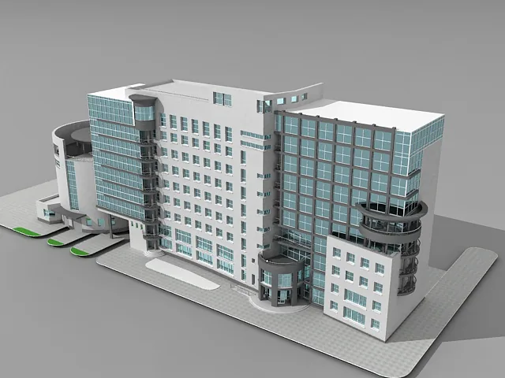
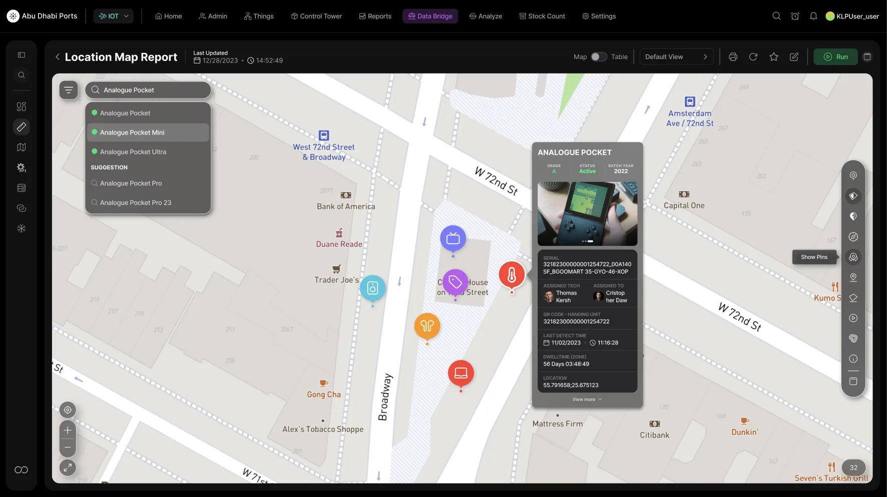
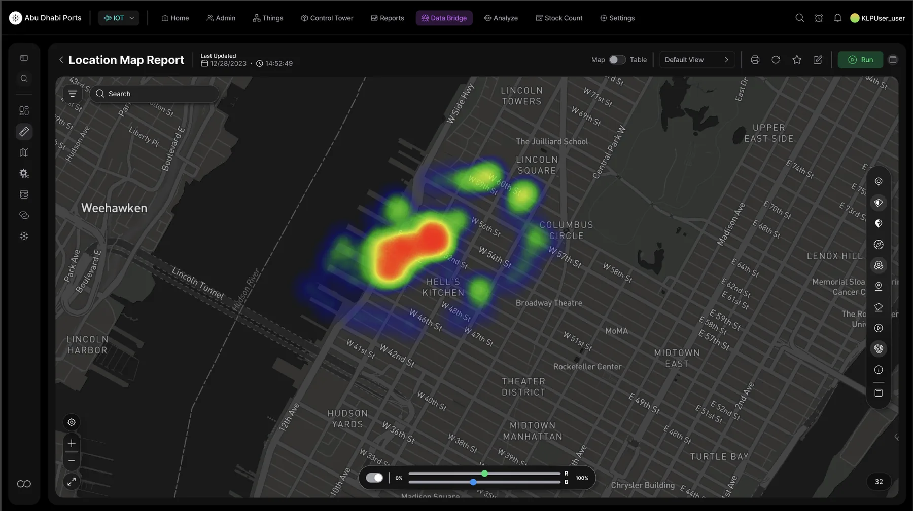
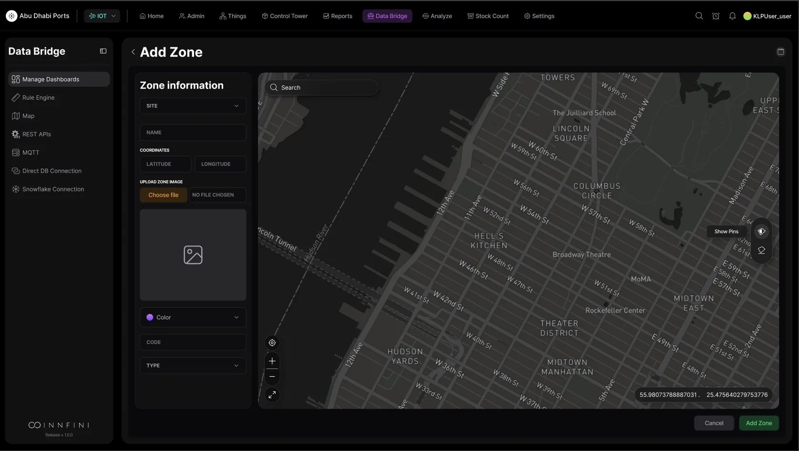
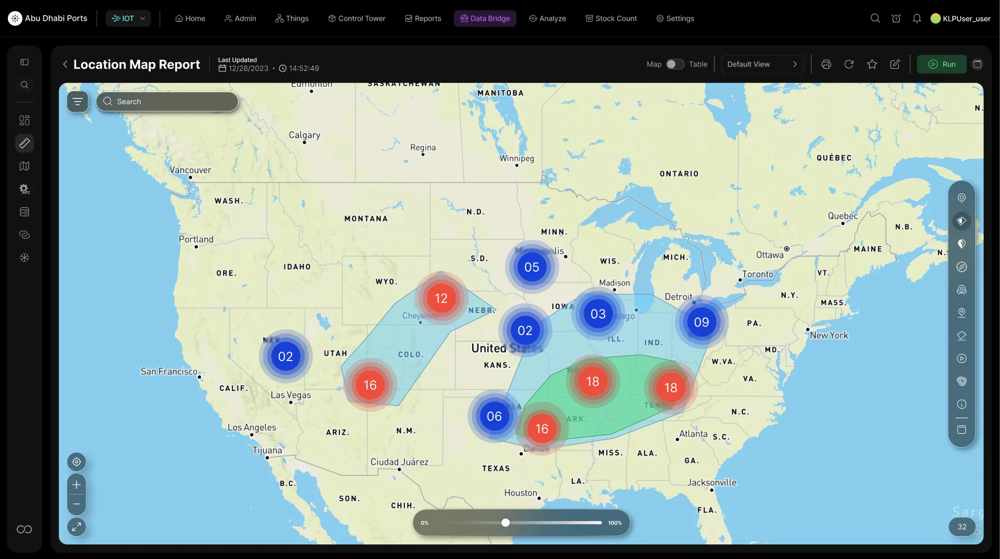

INNFINI captures geo-tagged data from any input — RFID readers, BLE gateways, GPS trackers, CCTV vision streams, environmental sensors and IoT devices — and converts it into rich 2D map reports and 3D building visualizations. Outdoor yards, indoor floor plans, dense urban blocks and continent-scale rollups all live on the same canvas.
2D + 3D
Map rendering
Any
Geo input
Live
Heat & flow
PinsHeatmap3D FloorsZones
3d-building · live · 28 sensors · 5 floorsStreaming

L5 · WATER LEAKRoof · Volume A
L2 · UNAUTHORIZEDSide entrance · A
B-ROOF · HIGH TEMPHVAC · 38.4°C
C · WATER LEAKSprinkler · floor 2
C-ROOF · UNAUTHAccess door
// How the data becomes a map
From signal to spatial story.
Every RFID read, BLE detection, GPS ping, vision event and sensor reading lands in the geospatial pipeline with timestamps and coordinates. INNFINI fuses, normalizes and projects it onto floor plans, 2D maps or 3D building views — and turns the result into reports operators can act on.
01 · Capture
From Any Input
RFID readers, BLE beacons, GPS trackers, cameras, environmental sensors and mobile apps — all become geo-tagged events.
RFID · BLE · GPS · vision · IoT
Indoor + outdoor
Mobile capture
02 · Fuse
Multi-Source Normalization
Coordinate systems, vendor formats and confidence scores are reconciled into one operational event stream.
Coordinate harmonization
Sensor fusion
Confidence scoring
03 · Project
2D + 3D Rendering
Choose how to view it — a flat city map, a yard plan, an indoor floor plan, or a fully isometric 3D building.
Street + satellite tiles
Indoor floor plans
3D building shells
04 · Layer
Pins · Heat · Flow
Single events as pins, density as heat, movement as flow lines, dwell as clusters — composable on any base map.
Cluster pins
Heatmap (R/B channels)
Flow lines
05 · Zone
Zones & Geofences
Author zones in the platform — restricted, storage, hazard, inspection — and the map immediately becomes zone-aware.
Draw on map
Color + code + type
Capacity + dwell rules
06 · Report
Location Reports
Movement, density, dwell, exceptions and SLA risk per zone, site or asset class — exported as scheduled reports.
Every asset on the street, counted in real time. Pin clusters group co-located devices into single numeric markers — 742, 173, 32, 12 — so dense urban deployments stay readable at every zoom. Filter chips (top-left) flip the view between device families (Analogue Pocket / Mini / Ultra) without leaving the map. Default rendering is the street-tile 2D view — the same data also renders in dark mode, heat mode and 3D building mode.
Location Map · single-asset drill-down with live telemetryAsset detail

Click any pin → full operational story. Zoom into a single block and the cluster fans out into typed pins (RFID, BLE, vision, environmental, GPS). Selecting a pin opens the asset detail card — grade, status, batch year, serial, QR code, assigned technician, last detect time, dwell-time in current zone (56 days here) and exact coordinates. The same panel that lives on the Asset Dashboard, opened in-place on the map.
Location Map · dark heatmap with R/B channel blendingDensity heat

Where the operation is hottest — at a glance. Same dataset, rendered as a density heatmap over a dark base map. The R/B channel slider at the bottom blends two independent metrics (e.g. asset density vs. dwell pressure) into a single color field. Operators flip from "all assets" to "high-value, last 24h" to "stuck > 30 min" in seconds without changing screens. Surfaces congestion, incident hotspots and safety-risk zones immediately.
Location Map · USA-wide cluster + zone polygon overlayContinent scale

One canvas. Local block to continent. Zoom out and the same map view rolls up into state-level cluster pins (blue = healthy counts, red = SLA pressure) with custom polygons (cyan, green) outlining operational regions, distribution corridors and exception zones. The 0–100% time scrubber at the bottom replays activity across any historical window. Multi-site operators see the network in one shot — and drill straight back down into the Manhattan view above with two clicks.
Data Bridge · Add Zone · author a new zone live on the mapZone authoring

From map to operational rule — without leaving the page. Pick a site, set latitude / longitude, upload a floor-plan image (which gets projected onto the live map for indoor 3D), choose color, code and type, and Save. The new zone becomes part of every downstream surface immediately: every event arriving inside it gets tagged, every rule referencing it triggers, every dashboard tile filters on it. Zones, geofences and indoor floor plans are first-class platform objects, not afterthoughts.
// Why Geospatial Reports matter
Where things are. Where they should be.
01 · Inputs
Capture Anything
RFID, BLE, GPS, vision, IoT — every geo-tagged signal flows into one map surface.
02 · Render
2D & 3D
Flat city maps, dark-mode heatmaps, indoor floor plans and isometric 3D buildings — same data, every render.
03 · Zoom
Block to Continent
Pin clusters, asset detail cards, dense heatmaps and state-level rollups all coexist on one canvas.
04 · Author
Live Zones
Draw zones and geofences on the map. They take effect instantly across every dashboard, rule and report.
Geospatial Reports turn raw location data into operational intelligence — captured from any sensor input, rendered in 2D or 3D, and connected directly to the assets, workflows and zones operators already use.
See the maps on your sites.
A guided tour through indoor + outdoor layers, heatmaps, 3D buildings and dwell-time clusters.